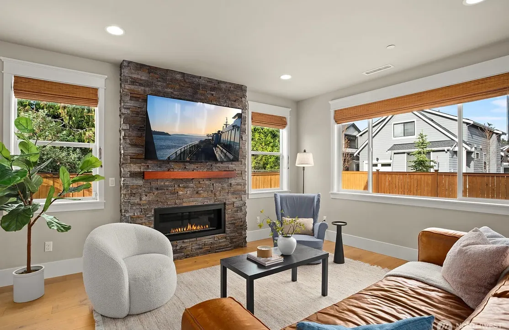
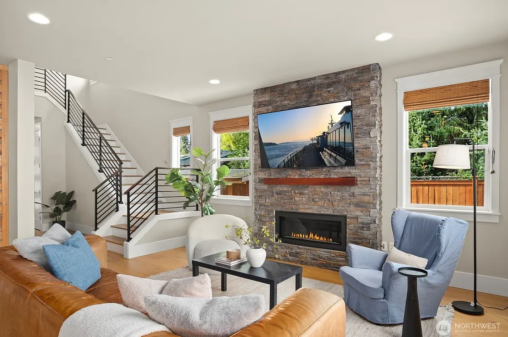
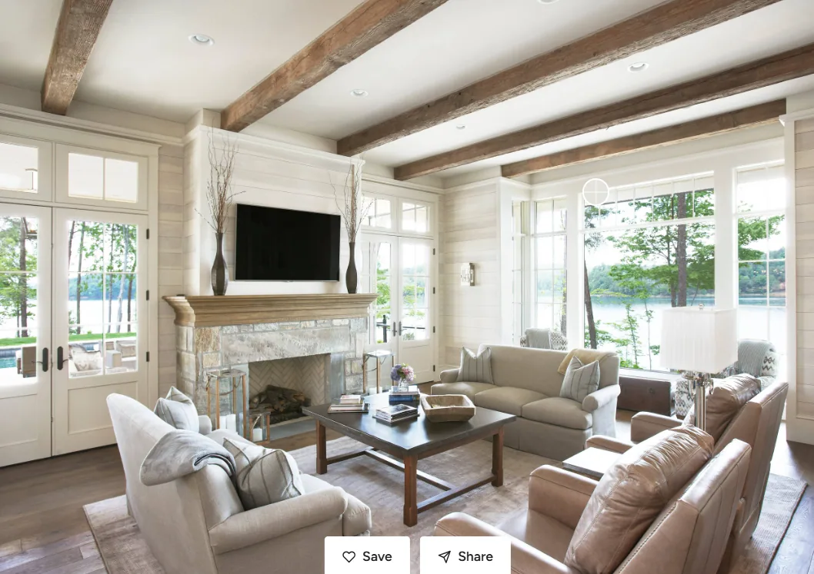

Living Room
We’re aiming for a bright, modern focal wall with a wide horizontal gas fireplace flanked by two windows, with a stone look around the fireplace.
Needs
One chair relocated: move the second oatmeal chair into the dining-side gap before the sofa, centered at (11,10.8) ft and angled 45 degrees toward the seating group. Keep the other chair and end table/lamp by the windows. This replaces the paired-window-chair arrangement below without adding a seat. The chair stays outside the main hall strip, but its approximately 12.8-inch sofa-end gap is not a walking route; occupied circulation and dining-chair pullout need review.
Media shelf removed: the owner rejected the new Xbox/Switch shelves. Remove both boards, their brackets and the cable basket; leave the right side of the fireplace open. No replacement storage or full-width cabinet is added. Piano, chairs and under-stair shelves stay unchanged. Console/controller storage and charging location remain undecided.
Right built-in removed: remove the remaining low cabinet to the right when facing the fireplace (dining side), leaving that floor area open. Both low fireplace cabinets are now gone; earlier cabinet specifications below are superseded. Keep the piano, window-side chair pair/table, fireplace, windows, existing baseboard and all four under-stair bookcases unchanged. Media-equipment storage, charging and ventilation need separate coordination; no replacement is proposed.
Covered patio outside living: the roof and table/four outdoor chairs now move behind the living room, with ground-level paving and a garden-path connection around dining. Living windows receive roof shade; kitchen/prep frontage becomes uncovered. No living window is converted to a door, and the room furnishings stay unchanged. Access remains from dining via the uncovered path, so a direct covered shoe-changing entrance still requires a separate door/layout/landing decision. See patio geometry, daylight and approval limits.
Ceiling-light revision: use warm 2700 K-intent deep-regressed recessed fixtures for general room illumination, replacing the surface-mounted disks. Each concept has a 4-inch aperture, small white trim, dark baffle and frosted lens recessed 2 inches above the ceiling plane. Retain separate shaded piano and end-table lamps. Dimming, ceiling fit and low-glare performance require actual product selection and review.
Latest owner revision: move the Yamaha CLP-825 in Rosewood to replace the left low built-in when facing the fireplace (stair side), centered at (1.074,23.655) ft, keyboard facing east into the room. Remove the right/dining-side cabinet too; retain all four under-stair bookcases; leave the former piano/loveseat spot open. Cabinet: 1350 × 411 × 849 mm; raised rest reaches 1003 mm. The model includes a provisional 24 × 12-inch bench, not a selected Yamaha bench. Keep the mushroom sofa, two chairs and small oak end table: five lounge seats, superseding seven-seat/loveseat notes below. Add soft, shielded 2700 K-intent ceiling, piano and end-table lighting; cans are only for whole-room ambient use. Verify occupied bench pullout/access, outlets/cords, glare, stability and fireplace clearances. Simplified size study, not manufacturer CAD.
Piano access limitation: moving the chairs to the opposite window wall removes the former 1.5-inch bench/chair conflict, but occupied playing/pullout access remains unverified. Piano width leaves about 10.9 inches at each end of the removed cabinet run. The cabinet and raised rest screen part of its window above the 31.2-inch sill; verify sash operation, apron/trim access, glare and actual occupied use. Keep the piano-window and tucked bench poses unchanged.
Keep the warm-neutral U grouping: a mushroom sofa facing the fireplace, a separate deep brown-gray two-seat loveseat perpendicular to it, and two warm oatmeal chairs opposite. Latest revision shortens the dark sofa to 66 inches and adds a small oak end table between the chairs, overriding only the earlier no-end-table direction. Keep earthy cushions, no coffee table/cart and no rug. Existing hardwood, architecture and the main hall route stay unchanged. Do not copy the photo's double-height ceiling or oversized chandelier. Performance upholstery, family comfort and cleanability require product selection and sit-testing; no product is selected.
Wider gas fireplace.
Five living-room window groups now occupy three wall openings: retain the two 48 × 64.8-inch fireplace-side openings at 31.2-inch sills. Join the three 30 × 60-inch return-wall units edge-to-edge at 30-inch centers, with one outer Craftsman trim/header/sill/apron and no wall piers: casement / fixed picture / casement in one 90 × 60-inch opening, 36-inch sill. All heads align at 8 ft under the 9 ft ceiling. Keep sconces at the outer ends of the group, not between windows; the pair on the removed stair partition is removed. See the window schedule, positions, spacing, and trim dimensions; sizes and framing remain provisional.
Stone covering the fireplace surround from floor to ceiling, including the side returns. Match the supplied fireplace photo's deeper taupe-brown stacked stone, with muted earthy brown, weathered gray, and charcoal variation and dark warm-gray joints, replacing the earlier golden honey-beige direction. Keep the staggered rectangular stones, subtle texture, exposed firebox, and TV. Photo lighting affects the apparent color; this is a screen approximation, not an identified stone product. Confirm physical samples, installation, and appliance clearances. See the mantel and window proportions below.
Extend the matching low fireplace-side cabinets to both ends of the wall, with no replacement benches. Keep all four open under-stair bookcase bays, shelves, and books through the end, with no solid end infill or stair-end door; continue clean, flat white baseboard to the west wall, with no quarter-round or shoe molding. Keep the stairwell window removed.
Add a simple white-oak beam mantel above the firebox, approximately 74.4 inches wide and 3.6 inches thick, with its underside at 48 inches above the floor. Show visible amber flames with bright cores over an ember bed. The mantel height/projection, nearby wood cabinetry, TV heat exposure, firebox depth, venting, and all combustible clearances are provisional, not an approved fireplace installation.
Extra blocking behind TV over fireplace for hanging bracket.
Matching closed-door white-oak cabinets run from both fireplace stone returns to the wall ends. Each is approximately 74.88 × 11.76 × 26 inches wide/deep/high, below the window aprons, superseding the narrow 24-inch units. Door fronts and top leading edges stay flush with the stone face, not the projecting mantel. Four Shaker doors per run use concealed push latches, with a center support; equipment and charging stay inside. Keep the tops clear, with no exposed bays or drawers. Current I has no separate chairs; H retains its floated chairs only for comparison. Earlier E/F/G corner-chair poses conflict with these longer cabinets and remain comparison-only. Confirm end scribes/baseboard junctions, countertop support, window access and actual equipment fit before fabrication.
Concealed receptacles, replaceable USB-C PD charging and Ethernet inside the cabinets, with at least 3 HDMI runs (or accessible conduit sized for future HDMI) to the TV/fireplace location (Xbox, Switch and security cameras). Retain 3-inch rear service gaps and open service backs. Verify actual equipment/laptop fit, cable bends and concealed ventilation for closed-door operation; the open rear alone does not establish adequate airflow. Direct stone adjacency is a visual concept, not approved combustible clearance; verify selected-fireplace requirements and noncombustible junctions before fabrication, along with charging loads, anchorage, window access and chair/door clearance.
Engineered hardwood throughout. At least 7” plank width.
Wants
Similar overall look/feel to the reference photo.
Floor outlet near primary seating area.
Living-room design
Current chair/window revision: move both 30 × 33-inch oatmeal chairs to the opposite, three-window side at (4.25,10.2) and (8.45,10.2) ft, backs toward the windows and facing south into the room. Their oak end table and lamp move between them to (6.35,10.2). Retain the sofa, relocated piano/bench and remaining built-ins. Chair fronts leave 25.8 inches to the sofa end; table-side gaps stay 2.2 inches. Join the three return windows into one centered 90 × 60-inch bank at x = 6.6, with one outer trim and continuous sill/apron. This supersedes the earlier north-facing chair poses and separated-window notes below. Verify occupied comfort, window reach/operation, factory mullions, continuous structural header, bracing, flashing and fireplace clearances; modeled gaps are not construction or circulation approval.
Lower fireplace reference: lower the wide black firebox to a provisional 12-inch bottom above finished floor, replacing the 21.3-inch base. Retain its 55.2-inch width and 15-inch height (top 27 inches), with the ember bed and flames lowered together. This approximates the owner's low-set photo, not a dimension measured from it. Keep the stone surround, mantel underside at 48 inches, TV and room layout unchanged. Confirm the selected appliance's floor, mantel, furniture and TV heat clearances, installation depth and venting before construction.
Default J / Warm photo U seating: the 90 × 39-inch mushroom sofa at (10.8, 17.475) stays facing west on the fireplace axis. A separate 66 × 39-inch deep brown-gray loveseat at (6.8, 10.8) faces south, with two full cushions rather than three. Two 30 × 33-inch oatmeal chairs at (4.25, 24.1) and (8.45, 24.1) face north toward it. A 16 × 16 × 22-inch oak end table centers between them at (6.35, 24.1), leaving 2.2 inches each side. Three main-sofa positions, two loveseat positions and two chairs are planning capacity, not verified comfort. The loveseat has sideways TV viewing.
No rug, coffee table/books, cart or lamp remains in J; the requested chair-side end table is the only table. Expose the existing hardwood and keep the center open. Keep the fireplace, full-length cabinets, windows, stairs, dining and hall tree unchanged. A-I remain earlier comparisons with their original furnishings and finishes.
Why this arrangement
- Emily Henderson's layout guidelines: preserve circulation. Retain the 36-inch hall strip x = 13.25-16.25 ft. The loveseat end is 32.04 inches from the closed cabinet line. Model checks are not accessibility, cabinet-operation or occupied-use approval.
- Open floor: keep no rug or central coffee table. Static gaps are 15.6 inches between sofa/loveseat ends along z, 18 inches from the main sofa end to chair fronts and 2.2 inches each side of the end table; these are not main walking routes. Verify table stability, eased edges and occupied reach. Chair backs are only 2.7 inches inside the nominal room end, so actual stair/guard access needs review. Static separation does not establish fireplace approval.
- Houzz's family-home advice: prioritize washable finishes and useful storage. Keep equipment concealed in the existing cabinets; confirm fabric performance from samples and care instructions, not rendered textures.
Earlier H/G sofa credit: GlamVelvetSofa, copyright 2021 Wayfair, LLC; Eric Chadwick, CC BY 4.0. Original file retained unmodified; viewer uniformly scales/positions it, selects the supplied Champagne fabric and disables the embedded studio light. J's sofas are separate modeled concepts. The AI-generated sofa candidates remain local evaluations outside the published asset library because redistribution rights are unresolved.
Assets and limits: J's mushroom/brown-gray sofas and warm oatmeal upholstered chairs are modeled design concepts, not the photographed products or manufacturer CAD. Earlier H/G retain the licensed Wayfair sofa and CC0 furnishings; I retains the larger brown L. The old still render predates these studies. Product selection, upholstery care, occupied use, cabinet/window operation, stair access and fireplace heat clearances remain unresolved.
| Option | Design intent | Trade-off |
|---|---|---|
| J / Warm photo U seating — default | Mushroom main sofa, perpendicular 66-inch brown-gray loveseat and two opposite oatmeal chairs sharing a small oak end table. No rug, coffee table, cart or lamp. | Seven planning positions; loveseat has sideways TV viewing. Comfort and operating clearances remain unverified. |
| I / Earlier deep family sectional | 144 × 104-inch brown L, rug and movable soft ottoman; no separate chairs. | Earlier concept, including its tighter cabinet approach; retained for comparison. |
| H / Earlier sofa and two chairs | Three sofa planning positions, two inward-facing chairs, rug, ottoman, two side tables and reading lamp. | Rejected by owner for family comfort; retained only as a comparison. |
| G / Earlier textured product sofa | 86-inch Wayfair sofa with the original window-corner armchairs, without central furnishings. | Earlier, more widely separated arrangement. |
| F / Earlier double-chaise sectional | Chaise–seat–seat–chaise plus two textured Poly Haven window-corner armchairs. No ottomans. | Provisional 132 × 68-inch sectional; generic chair assets approximately 32.25 × 38.8 inches. Six-person comfort and occupied access are not established. |
| E / Earlier corner-chair layout | Prior straight sofa and two inward-facing chairs, each with an ottoman; reading chair retains its book. | Comparison only; verify occupied comfort, cabinet/window access and fireplace heat clearances. |
| A / Airy holiday — earlier one-chair study | Keep the sofa facing the fireplace and float one angled chair. | The second chair is omitted seasonally, giving up one seat. This does not meet the six-seat target by itself. |
| B / Staggered pair | Keep both chairs, staggered and angled off the wall rather than in a row. | Tighter knee room and cabinet access; test with real furniture before choosing. |
| C / Split conversation | One chair at each end of the sofa makes a conversational U. | Chairs are conversational seats, not straight-on TV seats. |
| D / Sofa return | Rotate the sofa beneath the side window and float the chairs opposite. | Conversation-first, with a poor sideways TV angle. |
The 3D viewer shows J only; A-I remain recorded as comparisons in the viewer reference notes. J includes the main sofa, separate perpendicular loveseat, two upholstered chairs and their end table over exposed hardwood; the hallway tree stays fixed. These are studies, not comfortable-seating or installation approvals.
Christmas layout: center the slim tree in the open hallway between the living room and kitchen island, at the shared hall midpoint (19.85, 16.3683). Retain its 7 ft height, 3 ft diameter, warm lights, muted gold ornaments, gold cross topper, and tour collision geometry. This replaces the dining-corner placement. Verify actual spread, occupied circulation around the tree and island stools, stability, heat clearances, and power without cords across circulation; model measurements are not fire-safety approval.
J has one small oak end table between the chairs, but no cart, coffee table, rug or lamp. Keep the outer-window sconces, fireplace stone and TV unchanged. Confirm glare and window/casing clearances; rendered light is not photometric verification.
Adjacent dining wall: the patio-side return shifts 4 1/2 inches east so its dining face aligns with the kitchen sink base-cabinet end. This is not a backyard-wall extension. Dining is now 13.675 × 8.1 ft; the table/eight chairs and rear window/sconces recenter 2 1/4 inches east. Kitchen cabinets, living room and hall tree stay fixed. Patio door stays closed by default; its end chair still conflicts with the full swing, even tucked. See the current alignment and verification limits.
Connected kids room
Message-board lighting: add a slim shielded 45-inch satin-gold picture-light concept above the existing board, mounted about 85.2 inches above the floor. Warm downward wash light turns on with the viewer's Night mode. Keep the board, glass, papers, wall panelling and room layout unchanged. Use separate real-world dimming and test the glass from seated/standing eye positions to avoid reflected hotspots; verify mounting, electrical feed and fixture projection/headroom before installation. Preview brightness is not photometric or glare approval.
Hall panelling: continue the same warm-white vertical grooved finish around the message-wall corner and along the hall-facing west wall of the kids room and guest suite to the foyer. Keep the existing 8-inch flat white baseboard, 9-foot wall top and both doorway casings. Cut the panels around the kids opening at z = 27–31.5 ft and guest opening at z = 42–45 ft, including their projecting headers; continue panelling above them. Nominal 1/2-inch thickness projects into the hall, not the rooms. Verify installed circulation, doorway junctions and finish scribing.
Message-wall edges: finish both exposed ends in the same warm-white paint as the main panelling, replacing the natural-oak edge study. Keep the 4.2-inch-wide front strips flush with the panels, with 1/2-inch-thick corner returns covering the wall ends. Continue from the 8-inch white baseboard to the 9-foot wall top; only the board frame stays oak. Verify corner scribing and adjacent cabinet/trim junctions on site.
Selected layout: both desks on the south wall, PC left and homework right; both TROFAST units on the north wall. Shift both rows east toward the right-hand wall, keeping small trim/lift allowances. The comparison sheet remains available for alternatives; its sampled offsets are not the final east-aligned placement.
Family message wall: replace chalk with charcoal tempered dry-erase glass, retaining the 84 × 48-inch oak frame and cork paper strip with captive clips. Use opaque light-coloured dry-erase markers specifically approved for black glass, not chalk or liquid-chalk markers; test contrast, erasing and the manufacturer's cleaning instructions. No chalk dust, but marker residue still needs wiping. Use warm-white painted vertical grooved panelling across the kitchen/hall face only, replacing the sage study: 1/2 inch thick, from the existing 8-inch flat white baseboard to the 9-foot wall top. The board remains centered, bottom 30 inches, top 78 inches; remount over the panels, with total wall projection under 3.5 inches. This is separate from the removed artwork above TROFAST and stays outside the desk lift envelope. Verify safety glazing, weight-rated anchorage through panelling into blocking, child reach, rounded edges, age-appropriate markers and hall circulation; avoid loose magnets or accessible sharp pins. Illustrative finish study, not an interactive board, selected product or approved installation.
Swap the kids room with the stairs. The playroom occupies the former central stair area, x = 19-29 ft, now extended to z = 24.7367-34.6 ft, approximately 10 × 9.86 ft. Its kitchen-facing wall projects 11.56 inches farther forward to align with the tall cabinet fronts; the doorway stays fixed. The stacked stairs move to the west-side former playroom and turn toward the hall. Remove the living-facing partition and replace it with a 42-inch-high oak-capped dark guard at the stairwell edge, with vertical balusters and clear gaps no greater than 3.75 inches. Keep the east hall approach open, existing stair rails and under-stair bookcases intact. Verify wall-removal support, guard anchorage and local safety requirements before construction. The kids' doorless 4 ft 6 in-wide, 8 ft-high entry faces west at x = 19 ft, z = 27-31.5 ft, with white Craftsman trim. The former exterior kids window now lights the stairwell; this interior playroom has no modeled exterior window. No direct sofa supervision or acoustic separation is claimed.
Open floor: remove the east-wall bench and cushions, floor book display and artwork board above TROFAST. Leave their spaces open; retain the kitchen-facing family message wall.
Compute and make: both 47 1/4 × 31 1/2-inch MITTZON desks back onto the south wall, PC left (22.6729, 32.9375), homework right (26.7729, 32.9375). Chairs sit north at z = 31.6 facing south. Right desktop is 1 inch off the finished east wall; retain 1.95 inches between desks and 2.1 inches behind them for trim. Shown 29 1/2 inches high, not animated. Confirm manufacturer lift/pinch requirements, child chair/foot support, power and full-travel cable slack. Remove the rug and expose the continuous oak floor; furniture positions stay unchanged.
Sort LEGO and toys: both TROFAST units back onto the north wall, bins facing south, at (23.6083, 25.8106) / (27.025, 25.8106). Each is 39 × 17 3/8 × 37 inches; retain 2 inches between units, with the right frame 2.1 inches off the finished east wall. Eighteen removable boxes remain, left nine with separate provisional LEGO inserts. Anchor both frames; verify insert fit, containment, loads and bin travel. Front-to-front furniture gap is about 61.1 inches; full-depth pulled bins leave about 34.4 inches to tucked chair backs. A 30-inch chair allowance and 17 3/8-inch bin allowance leave only 13.7 inches between their envelopes, not a simultaneous passing aisle. Furniture clears a 30 × 43.5-inch west-entry approach; occupied circulation and retrieval still need confirmation. No stacking, climbing or seating on storage. Books and upper artwork remain removed.
Furniture placement, walking clearances, and the seating-for-six target are concept checks, not building-code or occupied-use approval. Verify cabinet anchorage, child-appropriate hardware, washable finishes, stable tables, and rug grip. Coordinate window fall protection/restrictors, egress, and cordless shades, especially beside the reading bench. See the opening notes and both rooms in 3D.
Real sofas for lounging
Earlier straight-sofa shortlist, researched October 18, 2026 from official store listings; these products are not the current double-chaise sectional. Dimensions are overall width × depth × height, not usable seat depth. Keep warm tan/light-brown upholstery rather than white or cream. Earlier 3D comparisons use the Lounge Deep leather sofa's dimensions, not a purchase selection or manufacturer CAD.
| Sofa / store link | Overall size | Why consider it |
|---|---|---|
| Crate & Barrel Lounge Deep 105" Leather Grande Sofa | 105 × 46 × 37 in | Recommended starting point: deep lounging proportions, slim track arms, and loose back cushions. Choose a warm leather from current swatches; the linked page may show a different color. |
| Crate & Barrel Lounge Deep 105" Grande Sofa, fabric | 105 × 46 × 37 in | Same deep footprint with a softer fabric feel. Ask for a warm tan/brown performance upholstery and confirm its specific care instructions; the default linked fabric is not the selected finish. |
| CB2 Faible 99" Brown Leather Deep Depth Sofa | 99 × 45 × 29 in | Lower, oversized lounge profile in brown leather. More compact than the Lounge; waxed leather develops wear and patina, so do not assume stain resistance or wipe-clean protection. |
Try both designs in store for lying down, back support, seat firmness, and your family's seating needs. Confirm upholstery protection, cleaning, delivery access, and current availability before ordering. Store pages blocked automated fetching, so sizes were cross-checked against their indexed official listings; prices and delivery dates are intentionally omitted.
Rendered living-room study

October 24, 2026 model snapshot rendered in Blender 4.5 LTS with Cycles, 128 samples and denoising. Geometry and modeled finishes come from the furnished viewer; daylight, surface microtexture and a nominal 9 ft ceiling are render-only presentation additions. This is a lighting/material study, not an AI-generated room or a photograph. Furniture and flame detail remain simplified; glazing, lighting, fireplace clearances and construction are not verified. Later model changes do not automatically update this image. Compare the interactive model.
Pictures
Below two pics are our previous living room in Seattle.


Inspiration photo.
